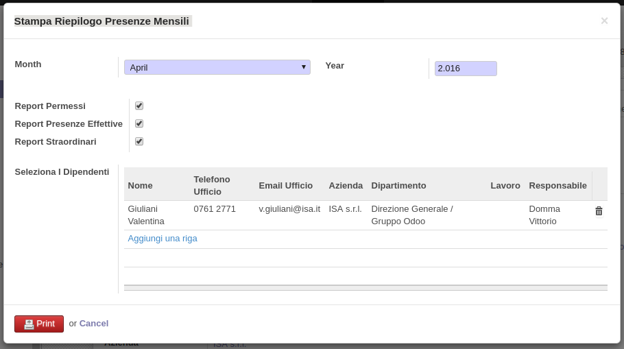
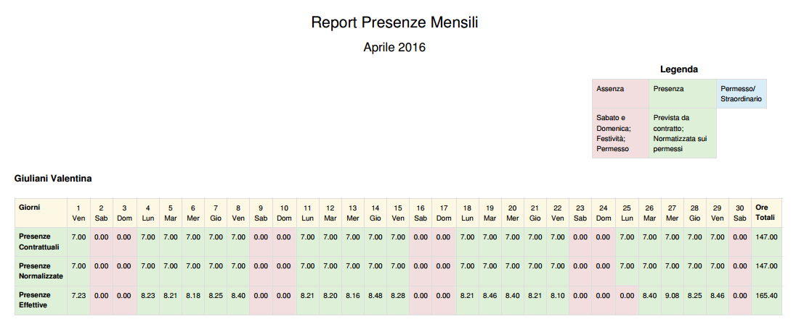

Funzioni principali del modulo
Questo modulo permette la stampa del report mensile riguardante le presenze degli impiegati:
il modulo permette sia la stampa di un report esclusivo per un particolare dipendente, sia la
stampa di un resoconto complessivo di più dipendenti. Tale modulo viene avviato dal pulsante
"Stampa" e al click su "Stampa Riepilogo Presenze Mensili".
All'apertura dello wizard l'utente puo' selezionare il mese, l'anno e scegliere cosa includere
nella stampa: i permessi richiesti dal dipendente in quel mese; le presenze effettive, valutate
sulle timbrature del dipendente; gli straordinari effettuati dal dipendente.
Di base il sistema mostra le presenze contrattuali e le presenze normalizzate: le prime sono le
ore previste da contratto (e' percio' richiesta una associazione di un contratto per ogni
dipendente di cui si vuole stampare un report); le presenze normalizzate invece sono le ore
contrattuali pesate sulle ore di assenza realizzate dal dipendente.

Viene realizzato un pdf, come mostrato in figura:
